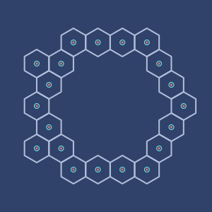
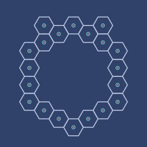
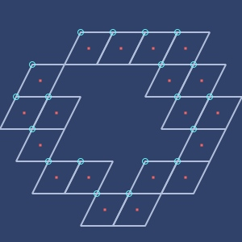
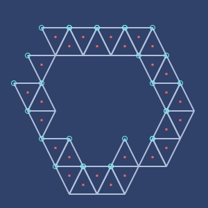
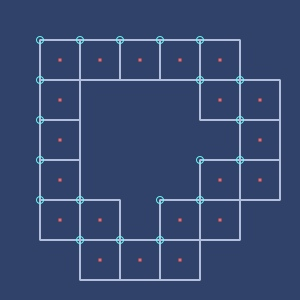
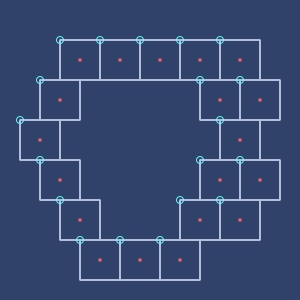

fastmath.grid
Grid calculation functions.
Convert 2d coordinates into various grid coordinates and back.
Terms used:
- cell type - grid cell shape: square, triangular, hexagonal, rhomboidal
- coords - 2d euclidean coordinates (x,y)
- cell - cell coordinates (q,r)
- anchor - cell position in 2d euclidean space
- corners - shape vertices
- size - size of the cell.
Grids
Each grid is defined by cell type and size. Optionally you can provide translating vector.
Each cell has it’s own coordinates, mostly axial based (only square has offset).
For hexagonal cell size is a radius from midpoint to corner. For the rest it is the size of the side.
Cell types are:
:square:shifted-square:triangle:rhombus:flat-hex- flat topped:pointy-hex- pointy topped
Notes
- Hexagonal grids are based on https://www.redblobgames.com/grids/hexagons/
- Only hexagonal cells have anchor at the center. For the rest the anchor is at the top left vertex.
- Anchors for triangular grids are shared between two cells: even and odd
qcoordinate. Evenqis pointy topped, oddqis flat topped.
- Anchors for triangular grids are shared between two cells: even and odd
Categories
Other vars: cell->anchor cell->mid cell-names coords->anchor coords->cell coords->mid corners flat-hex-corners grid grid-type pointy-hex-corners
cell->anchor
(cell->anchor g cell)Converts cell coordinates to anchor coordinates.
Examples
Usage
(cell->anchor (grid :triangle 20 10 10) [5 5])
;;=> [100.0 110.0]More examples (grid
gsame as above). For triangle grid pair of cells share the same anchor.
(cell->anchor g [0 0])
;;=> [10.0 10.0]
(cell->anchor g [1 0])
;;=> [10.0 10.0]
(cell->anchor g [2 0])
;;=> [30.0 10.0]
(cell->anchor g [3 0])
;;=> [30.0 10.0]
(cell->anchor (grid :shifted-square 20 10 10) [5 5])
;;=> [160.0 110.0]cell->mid
(cell->mid g cell)Converts cell coordinates to mid point
Examples
Usage
(cell->mid (grid :triangle 20 10 10) [5 5])
;;=> [100.0 123.33333333333333]More examples (grid
gsame as above).
(cell->mid g [0 0])
;;=> [10.0 23.333333333333336]
(cell->mid g [1 0])
;;=> [10.0 23.333333333333336]
(cell->mid g [2 0])
;;=> [30.0 23.333333333333336]
(cell->mid g [3 0])
;;=> [30.0 23.333333333333336]
(cell->mid (grid :shifted-square 20 10 10) [5 5])
;;=> [170.0 120.0]cell-names
Examples
List of all grid types.
cell-names
;;=> [:square :shifted-square :triangle :rhombus :flat-hex :pointy-hex]coords->anchor
(coords->anchor g coords)Converts 2d coordinates to cell anchor.
Examples
Usage
(coords->anchor (grid :rhombus) [105 105])
;;=> [100.0 100.0]
(coords->anchor (grid :rhombus) [100 100])
;;=> [100.0 100.0]
(coords->anchor (grid :rhombus) [99 99])
;;=> [95.0 90.0]coords->cell
(coords->cell g coords)Converts 2d space coordinates to cell coordinates.
Examples
Usage
(coords->cell (grid :pointy-hex 20 10 10) [50 50])
;;=> [1.0 3.0]More examples (grid
gsame as above)
(coords->cell g [0 0])
;;=> [0.0 -1.0]
(coords->cell g [100 100])
;;=> [2.0 6.0]
(coords->cell g [-150 -150])
;;=> [-4.0 -11.0]coords->mid
(coords->mid g coords)Converts 2d space into cell midpoint.
Examples
Usage
(coords->mid (grid :pointy-hex 20 10 10) [50 50])
;;=> [53.301270189221924 55.0]More examples (grid
gsame as above)
(coords->mid g [0 0])
;;=> [1.3397459621556145 -5.0]
(coords->mid g [100 100])
;;=> [96.60254037844385 100.0]
(coords->mid g [-150 -150])
;;=> [-154.54482671904333 -155.0]corners
(corners g coords)(corners g coords scale)Returns list of cell vertices for given 2d space coordinates.
Examples
Usage
(corners (grid :flat-hex 20) [100 100])
;;=> ([115.0 95.26279441628824]
;;=> [110.0 103.92304845413263]
;;=> [100.0 103.92304845413264]
;;=> [95.0 95.26279441628824]
;;=> [100.0 86.60254037844386]
;;=> [110.0 86.60254037844386])
(corners (grid :triangle 10 10 10) [100 100])
;;=> [[95.0 100.0] [105.0 100.0] [100.0 110.0]]flat-hex-corners
Function which returns vertices for flat topped hexagon for given size and coordinates.
Examples
Generate vertices for flat topped hexagon for given position and size
(flat-hex-corners 100 [15 15])
;;=> ([115.0 15.0]
;;=> [65.0 101.60254037844386]
;;=> [-34.999999999999986 101.60254037844388]
;;=> [-85.0 15.000000000000012]
;;=> [-35.000000000000064 -71.60254037844382]
;;=> [65.0 -71.60254037844386])
(flat-hex-corners 1 [0 0])
;;=> ([1.0 0.0]
;;=> [0.5 0.8660254037844386]
;;=> [-0.49999999999999983 0.8660254037844388]
;;=> [-1.0 1.224646799076922E-16]
;;=> [-0.5000000000000007 -0.8660254037844383]
;;=> [0.5 -0.8660254037844386])
(flat-hex-corners 100 0 0)
;;=> ([100.0 0.0]
;;=> [50.0 86.60254037844386]
;;=> [-49.999999999999986 86.60254037844388]
;;=> [-100.0 1.224646799076922E-14]
;;=> [-50.000000000000064 -86.60254037844382]
;;=> [50.0 -86.60254037844386])grid
(grid type size sx sy)(grid type size)(grid type)(grid)Create grid for given type, size and optional translating vector.
Examples
Usage
(grid :pointy-hex 20)
;;=> pointy-hex, size=10.0
(grid :triangular 10 5.0 5.0)
;;=> triangular, size=10.0
(name (grid :square))
;;=> square
(str (grid :rhombus))
;;=> rhombus, size=10.0
(grid)
;;=> square, size=10.0Pointy hex (red dot: mid point, cyan circle: anchor)
Flat hex (red dot: mid point, cyan circle: anchor)
Rhombus (red dot: mid point, cyan circle: anchor)
Triangle (red dot: mid point, cyan circle: anchor)
Square (red dot: mid point, cyan circle: anchor)
Shifted square (red dot: mid point, cyan circle: anchor)
grid-type
(grid-type g)Returns type of the cell.
Examples
Usage
(grid-type (grid :flat-hex 10))
;;=> :flat-hexpointy-hex-corners
Function which returns vertices for pointy topped hexagon for given size and coordinates.
Examples
Generate vertices for pointy topped hexagon for given position and size
(pointy-hex-corners 100 [15 15])
;;=> ([101.60254037844388 64.99999999999999]
;;=> [15.000000000000005 115.0]
;;=> [-71.60254037844386 65.00000000000001]
;;=> [-71.60254037844386 -35.000000000000014]
;;=> [14.999999999999982 -85.0]
;;=> [101.60254037844382 -35.000000000000064])
(pointy-hex-corners 1 [0 0])
;;=> ([0.8660254037844387 0.4999999999999999]
;;=> [6.12323399538461E-17 1.0]
;;=> [-0.8660254037844386 0.5000000000000001]
;;=> [-0.8660254037844386 -0.5000000000000001]
;;=> [-1.83697019874463E-16 -1.0]
;;=> [0.8660254037844382 -0.5000000000000007])
(pointy-hex-corners 100 0 0)
;;=> ([86.60254037844388 49.999999999999986]
;;=> [6.12323399538461E-15 100.0]
;;=> [-86.60254037844386 50.000000000000014]
;;=> [-86.60254037844386 -50.000000000000014]
;;=> [-1.83697019874463E-14 -100.0]
;;=> [86.60254037844382 -50.000000000000064])